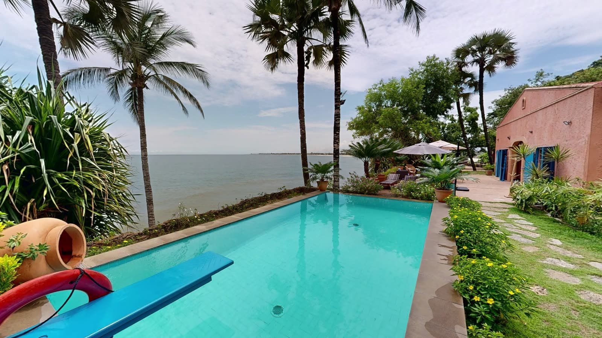

<meta charset="utf-8">
<meta name="viewport" content="width=device-width, initial-scale=1, viewport-fit=cover">
<title>Mvassa Le Rocher</title>
<link rel="preconnect" href="https://fonts.googleapis.com">
<link rel="preconnect" href="https://fonts.gstatic.com" crossorigin>
<link rel="stylesheet" href="https://fonts.googleapis.com/css2?family=Bricolage+Grotesque:opsz,wght@12..96,400;12..96,600;12..96,800&family=Instrument+Sans:wght@400;500;600&family=IBM+Plex+Mono:wght@400;500&display=swap">
<style>
/* Layout : une scène plein écran collée (sticky) ; le scroll fait avancer la caméra d'un point de vue au suivant, comme une balade dans la visite 3D. */
:root{
  --ink:#0c1f26;        /* mer profonde, fond */
  --ink-2:#14313b;
  --sand:#f3ebe1;       /* texte */
  --sand-dim:rgba(243,235,225,.74);
  --shutter:#3a97dc;    /* bleu des volets */
  --wall:#dba48f;       /* ocre rose des murs */
  --line:rgba(243,235,225,.18);
  --f-display:"Bricolage Grotesque", "Avenir Next", system-ui, sans-serif;
  --f-body:"Instrument Sans", "Helvetica Neue", system-ui, sans-serif;
  --f-mono:"IBM Plex Mono", ui-monospace, Menlo, monospace;
  color-scheme:dark;
}
*{box-sizing:border-box}
html{scroll-behavior:auto}
body{background:var(--ink);color:var(--sand);font-family:var(--f-body);font-size:16px;line-height:1.55;-webkit-font-smoothing:antialiased}
a{color:inherit}
:focus-visible{outline:2px solid var(--shutter);outline-offset:3px;border-radius:4px}
body::before{content:"";position:fixed;inset:0 0 auto;height:env(safe-area-inset-top,0px);z-index:30;background:var(--ink)}

/* ---------- En-tête ---------- */
.top{position:fixed;top:env(safe-area-inset-top,0px);left:0;right:0;z-index:20;display:flex;align-items:center;justify-content:space-between;gap:16px;
  padding-block:18px;padding-left:max(24px,env(safe-area-inset-left,0px));padding-right:max(24px,env(safe-area-inset-right,0px));
  background:linear-gradient(to bottom,rgba(12,31,38,.55),rgba(12,31,38,0))}
.brand{display:flex;align-items:baseline;gap:10px;text-decoration:none}
.brand b{font-family:var(--f-display);font-weight:800;font-size:22px;letter-spacing:-.02em}
.brand span{font-family:var(--f-mono);font-size:11px;letter-spacing:.14em;text-transform:uppercase;color:var(--wall)}
.top nav{display:flex;gap:10px;align-items:center}
.switch{display:inline-flex;padding:3px;border-radius:999px;border:1px solid var(--line);background:rgba(12,31,38,.35);backdrop-filter:blur(8px);-webkit-backdrop-filter:blur(8px)}
.switch a{font:500 13px/1 var(--f-body);text-decoration:none;padding:8px 12px;border-radius:999px;color:var(--sand-dim);transition:background .2s,color .2s}
.switch a:hover{color:var(--sand)}
.switch a[aria-current]{background:var(--sand);color:var(--ink)}
.btn{display:inline-flex;align-items:center;gap:8px;font:500 14px/1 var(--f-body);text-decoration:none;padding:11px 16px;border-radius:999px;border:1px solid var(--line);background:rgba(12,31,38,.35);backdrop-filter:blur(8px);-webkit-backdrop-filter:blur(8px);transition:background .2s,border-color .2s}
.btn:hover{border-color:var(--sand)}
.btn.solid{background:var(--shutter);border-color:var(--shutter);color:#fff}
.btn.solid:hover{background:#2c86cb}

/* ---------- Balade ---------- */
.tour{position:relative}
.stage{position:sticky;top:0;height:100vh;height:100svh;overflow:hidden;background:var(--ink)}
.film{position:absolute;inset:0;width:100%;height:100%;display:block;object-fit:cover;transition:opacity .16s}
.film.blink{opacity:0}
.cover{position:absolute;inset:0;width:100%;height:100%;max-width:none;object-fit:cover;transition:opacity .6s}
.cover.off{opacity:0}
.load{position:absolute;z-index:3;left:max(24px,env(safe-area-inset-left,0px));top:calc(env(safe-area-inset-top,0px) + 84px);font:500 11px/1 var(--f-mono);letter-spacing:.12em;text-transform:uppercase;color:var(--sand-dim);transition:opacity .6s}
.load.done{opacity:0}
.stage::after{content:"";position:absolute;inset:0;pointer-events:none;
  background:linear-gradient(to top,rgba(12,31,38,.88) 0%,rgba(12,31,38,.25) 38%,rgba(12,31,38,0) 60%),
             radial-gradient(120% 90% at 50% 40%,transparent 55%,rgba(12,31,38,.45) 100%)}

.caps{position:absolute;inset:0;z-index:2;pointer-events:none}
.cap{position:absolute;left:0;right:0;bottom:0;padding-bottom:clamp(40px,9vh,96px);
  padding-left:max(24px,env(safe-area-inset-left,0px));padding-right:max(24px,env(safe-area-inset-right,0px));opacity:0;visibility:hidden;transform:translateY(18px);transition:opacity .5s,transform .5s,visibility 0s .5s}
.cap.on{opacity:1;visibility:visible;transform:none;transition:opacity .5s,transform .5s,visibility 0s}
.cap-in{max-width:620px}
.cap .k{font-family:var(--f-mono);font-size:12px;letter-spacing:.16em;text-transform:uppercase;color:var(--wall);display:flex;gap:12px;align-items:center}
.cap .k::before{content:"";width:28px;height:1px;background:currentColor}
.cap h2{font-family:var(--f-display);font-weight:800;font-size:clamp(36px,6.2vw,76px);line-height:.96;letter-spacing:-.03em;margin:14px 0 14px;text-wrap:balance}
.cap p{margin:0;font-size:clamp(16px,1.35vw,19px);color:var(--sand-dim);max-width:52ch}
.cap.hero .cap-in{max-width:980px}
.cap.hero h2{font-size:clamp(44px,7.4vw,112px)}
.caps::before{content:"";position:absolute;inset:0;background:linear-gradient(to right,rgba(12,31,38,.55),rgba(12,31,38,0) 55%);pointer-events:none}
.hint{margin-top:26px;font-family:var(--f-mono);font-size:12px;letter-spacing:.12em;text-transform:uppercase;color:var(--sand-dim);display:flex;gap:10px;align-items:center}
.hint i{width:1px;height:34px;background:linear-gradient(var(--sand),transparent);animation:drip 1.8s ease-in-out infinite}
@keyframes drip{0%{transform:scaleY(.2);transform-origin:top}50%{transform:scaleY(1);transform-origin:top}100%{transform:scaleY(.2);transform-origin:bottom}}

/* Parcours : la liste des points de vue */
.rail{position:absolute;z-index:3;right:max(24px,env(safe-area-inset-right,0px));top:50%;transform:translateY(-50%);list-style:none;margin:0;padding:0;display:flex;flex-direction:column;gap:4px}
.rail li{display:flex;justify-content:flex-end}
.rail button{all:unset;cursor:pointer;display:flex;align-items:center;justify-content:flex-end;gap:12px;padding:6px 0;font:500 12px/1 var(--f-mono);letter-spacing:.08em;text-transform:uppercase;color:var(--sand-dim)}
.rail button span{opacity:0;transform:translateX(6px);transition:opacity .25s,transform .25s}
.rail button:hover span,.rail button:focus-visible span,.rail li.on span{opacity:1;transform:none}
.rail button em{font-style:normal;width:26px;text-align:right;font-variant-numeric:tabular-nums}
.rail button::after{content:"";width:8px;height:8px;border-radius:50%;border:1px solid var(--sand-dim);transition:all .25s}
.rail li.on button{color:var(--sand)}
.rail li.on button::after{background:var(--shutter);border-color:var(--shutter);transform:scale(1.35)}
.bar{display:none}

/* ---------- Visite libre ---------- */
.free{position:relative;padding-block:clamp(72px,12vh,140px);padding-left:max(24px,env(safe-area-inset-left,0px));padding-right:max(24px,env(safe-area-inset-right,0px));background:var(--ink)}
.free-in{max-width:1180px;margin:0 auto;display:grid;grid-template-columns:minmax(0,5fr) minmax(0,7fr);gap:clamp(28px,5vw,72px);align-items:center}
.eyebrow{font-family:var(--f-mono);font-size:12px;letter-spacing:.16em;text-transform:uppercase;color:var(--wall)}
.free h3,.stay h3{font-family:var(--f-display);font-weight:800;font-size:clamp(32px,4.4vw,54px);line-height:1;letter-spacing:-.03em;margin:12px 0 16px;text-wrap:balance}
.free p{color:var(--sand-dim);margin:0 0 24px;max-width:46ch}
.portal{position:relative;display:block;aspect-ratio:16/10;max-width:100%;border-radius:18px;overflow:hidden;text-decoration:none;background:#000 url(img/s3.jpg) center/cover;isolation:isolate}
.portal::before{content:"";position:absolute;inset:0;background:linear-gradient(to top,rgba(12,31,38,.85),rgba(12,31,38,.1) 60%);z-index:-1}
.portal .play{position:absolute;left:50%;top:46%;transform:translate(-50%,-50%);width:84px;height:84px;border-radius:50%;background:rgba(243,235,225,.16);border:1px solid rgba(243,235,225,.6);backdrop-filter:blur(6px);-webkit-backdrop-filter:blur(6px);display:grid;place-items:center;transition:transform .3s,background .3s}
.portal:hover .play{transform:translate(-50%,-50%) scale(1.08);background:var(--shutter);border-color:var(--shutter)}
.portal .play svg{width:30px;height:30px}
.portal .lbl{position:absolute;left:22px;right:22px;bottom:20px;display:flex;justify-content:space-between;align-items:flex-end;gap:12px;flex-wrap:wrap}
.portal .lbl b{font-family:var(--f-display);font-size:22px;font-weight:600}
.portal .lbl small{font-family:var(--f-mono);font-size:11px;letter-spacing:.12em;text-transform:uppercase;color:var(--sand-dim)}
.note{font-size:13px;color:var(--sand-dim);border-left:2px solid var(--wall);padding-left:12px;margin-top:8px}

/* ---------- Séjour (à compléter) ---------- */
.stay{padding-block:clamp(56px,10vh,110px);padding-left:max(24px,env(safe-area-inset-left,0px));padding-right:max(24px,env(safe-area-inset-right,0px));background:var(--ink-2)}
.stay-in{max-width:1180px;margin:0 auto}
.cards{display:grid;grid-template-columns:repeat(3,minmax(0,1fr));gap:18px;margin-top:28px}
.card{padding:22px;border-radius:14px;border:1px dashed var(--line);min-width:0}
.card h4{margin:0 0 8px;font:600 18px/1.2 var(--f-display)}
.card p{margin:0;color:var(--sand-dim);font-size:15px}
.todo{display:inline-block;margin-top:12px;font:500 11px/1 var(--f-mono);letter-spacing:.1em;text-transform:uppercase;color:var(--wall);border:1px solid currentColor;border-radius:999px;padding:5px 9px}
footer{padding-block:28px;padding-left:max(24px,env(safe-area-inset-left,0px));padding-right:max(24px,env(safe-area-inset-right,0px));display:flex;justify-content:space-between;gap:12px;flex-wrap:wrap;font-size:13px;color:var(--sand-dim);border-top:1px solid var(--line);background:var(--ink-2)}

/* ---------- Téléphone ---------- */
@media (max-width:760px){
  .top{padding-left:max(16px,env(safe-area-inset-left,0px));padding-right:max(16px,env(safe-area-inset-right,0px))}
  .brand span{display:none}
  .top nav .btn:not(.solid){display:none}
  .switch a{padding:7px 10px;font-size:12px}
  .cap{padding-left:max(16px,env(safe-area-inset-left,0px));padding-right:max(16px,env(safe-area-inset-right,0px))}
  .rail{display:none}
  .bar{display:flex;position:absolute;z-index:3;left:max(16px,env(safe-area-inset-left,0px));right:max(16px,env(safe-area-inset-right,0px));top:calc(env(safe-area-inset-top,0px) + 72px);gap:4px}
  .bar i{flex:1;height:2px;background:var(--line);border-radius:2px;overflow:hidden;position:relative}
  .bar i b{position:absolute;inset:0;background:var(--sand);transform-origin:left;transform:scaleX(0)}
  .free-in{grid-template-columns:minmax(0,1fr)}
  .cards{grid-template-columns:minmax(0,1fr)}
  .free,.stay{padding-left:max(16px,env(safe-area-inset-left,0px));padding-right:max(16px,env(safe-area-inset-right,0px))}
}
@media (prefers-reduced-motion:reduce){.hint i{animation:none}.cap{transform:none}}
</style>

<header class="top">
  <a class="brand" href="#top"><b>Le Rocher</b><span>Mvassa</span></a>
  <nav>
    <div class="switch" role="group" aria-label="Version du site"><a href="index.html" aria-current="page">Vidéo</a><a href="photos.html">Photos</a></div>
    <a class="btn" href="https://my.matterport.com/show/?m=r2jwHmgH1ga" target="_blank" rel="noopener">Visite 3D ↗</a>
    <a class="btn solid" href="#sejour">Réserver</a>
  </nav>
</header>

<main id="top">
  <section class="tour" id="tour" aria-label="Balade dans le domaine">
    <div class="stage">
      <video class="film" src="video/visite-720.mp4" poster="video/accueil.jpg" muted playsinline preload="auto" aria-label="Vidéo de la visite du domaine, qui avance quand on fait défiler la page"></video>
      
      <div class="load" aria-live="polite">Chargement de la visite · <span>0</span>%</div>

      <div class="caps">
        <article class="cap hero on" data-name="Accueil"><div class="cap-in">
          <div class="k">Mvassa · Le Rocher</div>
          <h2>Une piscine posée au-dessus de l'eau.</h2>
          <p>Faites défiler la page pour faire la visite : le portail, le parc, les chambres, puis la terrasse, le bungalow sur le rocher et la mer.</p>
          <div class="hint"><i></i>Faites défiler pour entrer</div>
        </div></article>
        <article class="cap" data-name="Arrivée" data-t="0,5.75"><div class="cap-in">
          <div class="k">Étape 01 · L'arrivée</div>
          <h2>Le portail, puis l'allée.</h2>
          <p>Passé le grand portail vert, une allée de sable file sous les palmiers et les grands arbres.</p>
        </div></article>
        <article class="cap" data-name="Parc" data-t="5.75,16.25"><div class="cap-in">
          <div class="k">Étape 02 · Le parc</div>
          <h2>Un parc à perte de vue.</h2>
          <p>Pelouses, palmiers et massifs : de quoi marcher, jouer ou faire la sieste à l'ombre.</p>
        </div></article>
        <article class="cap" data-name="Maisons" data-t="16.25,25.75"><div class="cap-in">
          <div class="k">Étape 03 · Les maisons</div>
          <h2>Des maisons sous les fleurs.</h2>
          <p>Les maisons ocre se cachent entre les bougainvilliers.</p>
        </div></article>
        <article class="cap" data-name="Patio" data-t="25.75,40.5"><div class="cap-in">
          <div class="k">Étape 04 · Le patio</div>
          <h2>Patio, chambres et cuisine.</h2>
          <p>Autour d'un patio planté : des chambres fraîches aux lits en bois, et une cuisine équipée.</p>
        </div></article>
        <article class="cap" data-name="Salles d'eau" data-t="40.5,51"><div class="cap-in">
          <div class="k">Étape 05 · Chambres et salles d'eau</div>
          <h2>Arches, mosaïques et bois.</h2>
          <p>Miroirs ronds, faïence colorée et portes en arcade : le soin du détail jusque dans les salles d'eau.</p>
        </div></article>
        <article class="cap" data-name="Salle commune" data-t="51,55"><div class="cap-in">
          <div class="k">Étape 06 · La salle commune</div>
          <h2>Une grande table, la mer au bout.</h2>
          <p>Dans la salle commune, l'arche s'ouvre directement sur la terrasse.</p>
        </div></article>
        <article class="cap" data-name="Terrasse" data-t="55,60.75"><div class="cap-in">
          <div class="k">Étape 07 · La terrasse</div>
          <h2>Parasols face à la mer.</h2>
          <p>Salons de jardin et parasols : la terrasse donne directement sur l'eau.</p>
        </div></article>
        <article class="cap" data-name="Piscine" data-t="60.75,65.75"><div class="cap-in">
          <div class="k">Étape 08 · La piscine</div>
          <h2>La piscine longe le large.</h2>
          <p>Elle suit le bord du rocher, entre les palmiers et la mer.</p>
        </div></article>
        <article class="cap" data-name="Jardin" data-t="65.75,76.75"><div class="cap-in">
          <div class="k">Étape 09 · Le jardin</div>
          <h2>Le chemin vers la mer.</h2>
          <p>Un sentier de pierres traverse le jardin jusqu'au bord de l'eau.</p>
        </div></article>
        <article class="cap" data-name="Pavillon" data-t="76.75,90.75"><div class="cap-in">
          <div class="k">Étape 10 · Le pavillon</div>
          <h2>Le pavillon aux arcades.</h2>
          <p>Sous ses arches, une grande table à l'abri du soleil, ouverte sur la mer.</p>
        </div></article>
        <article class="cap" data-name="Bungalow" data-t="90.75,105.25"><div class="cap-in">
          <div class="k">Étape 11 · Le bungalow</div>
          <h2>Un bungalow sur le rocher.</h2>
          <p>Perché au-dessus des vagues, avec ses volets bleus et sa chambre aux couleurs du large.</p>
        </div></article>
        <article class="cap" data-name="Vagues" data-t="105.25,117.75"><div class="cap-in">
          <div class="k">Étape 12 · Vue sur les vagues</div>
          <h2>Dormir au bruit des vagues.</h2>
          <p>Une grande baie vitrée sur l'eau et une salle d'eau en faïence bleue.</p>
        </div></article>
        <article class="cap" data-name="Le rocher" data-t="117.75,999"><div class="cap-in">
          <div class="k">Étape 13 · Le rocher</div>
          <h2>Et au bout, le rocher.</h2>
          <p>Le sentier descend jusqu'aux rochers, face au soleil. La suite, c'est en visite libre.</p>
        </div></article>
      </div>

      <ol class="rail" aria-label="Étapes de la visite"></ol>
      <div class="bar" aria-hidden="true"></div>
    </div>
  </section>

  <section class="free" id="visite">
    <div class="free-in">
      <div>
        <div class="eyebrow">Visite libre</div>
        <h3>Promenez-vous où vous voulez.</h3>
        <p>La visite 3D vous laisse vous déplacer librement dans tout le domaine, à votre rythme, sur ordinateur comme sur téléphone.</p>
        <a class="btn solid" href="https://my.matterport.com/show/?m=r2jwHmgH1ga" target="_blank" rel="noopener">Ouvrir la visite 3D ↗</a>
        <p class="note">Prototype : sur le site final, la visite 3D s'affiche directement dans ce cadre, sans quitter la page.</p>
      </div>
      <a class="portal" href="https://my.matterport.com/show/?m=r2jwHmgH1ga" target="_blank" rel="noopener" aria-label="Ouvrir la visite 3D dans un nouvel onglet">
        <span class="play"><svg viewBox="0 0 24 24" fill="#f3ebe1" aria-hidden="true"><path d="M8 5.5v13l10.5-6.5z"/></svg></span>
        <span class="lbl"><b>Visite 3D du Rocher</b><small>Matterport · 360°</small></span>
      </a>
    </div>
  </section>

  <section class="stay" id="sejour">
    <div class="stay-in">
      <div class="eyebrow">Préparer votre séjour</div>
      <h3>Venir au Rocher</h3>
      <div class="cards">
        <div class="card"><h4>Hébergement</h4><p>Types de chambres, capacité, équipements et tarifs.</p><span class="todo">Infos client à compléter</span></div>
        <div class="card"><h4>Accès</h4><p>Adresse, plan d'accès, distance depuis l'aéroport et la ville.</p><span class="todo">Infos client à compléter</span></div>
        <div class="card"><h4>Réservation</h4><p>Téléphone, e-mail, WhatsApp ou module de réservation en ligne.</p><span class="todo">Infos client à compléter</span></div>
      </div>
    </div>
  </section>
</main>
<footer><span>Mvassa · Le Rocher</span><span>Prototype de site immersif · vidéo enregistrée dans la visite 3D</span></footer>

<script>
/* Lecture par chapitres : chaque cran de scroll joue le passage suivant de la vidéo
   à vitesse normale, puis s'arrête en douceur sur l'étape. */
(function(){
  var STEP=0.9; // hauteur de scroll par étape, en écrans
  var track=document.getElementById('tour');
  var video=track.querySelector('.film'), cover=track.querySelector('.cover');
  var caps=[].slice.call(track.querySelectorAll('.cap'));
  var chaps=caps.slice(1).map(function(c){return c.dataset.t.split(',').map(Number)});
  var rail=track.querySelector('.rail'), bar=track.querySelector('.bar');
  var loadEl=track.querySelector('.load'), loadPct=loadEl.querySelector('span');
  var reduce=window.matchMedia('(prefers-reduced-motion: reduce)').matches;
  var clamp=function(v,lo,hi){return Math.max(lo,Math.min(hi,v))};
  var steps=caps.length; // 0 = accueil, puis une étape par chapitre
  video.muted=true;

  caps.forEach(function(c,i){
    var li=document.createElement('li');
    li.innerHTML='<button type="button"><span>'+c.dataset.name+'</span><em>'+String(i).padStart(2,'0')+'</em></button>';
    li.firstChild.addEventListener('click',function(){goTo(i)});
    rail.appendChild(li);
    if(i>0){var s=document.createElement('i');s.appendChild(document.createElement('b'));bar.appendChild(s);}
  });
  var railItems=[].slice.call(rail.children), bars=[].slice.call(bar.querySelectorAll('b'));

  var vh=0;
  function size(){
    vh=window.innerHeight;
    track.style.height=((steps-1)*STEP*vh+vh)+'px';
  }
  function stepNow(){
    var y=-track.getBoundingClientRect().top;
    return clamp(Math.round(y/(STEP*vh)),0,steps-1);
  }
  function goTo(i){
    var y=window.scrollY+track.getBoundingClientRect().top+i*STEP*vh;
    window.scrollTo({top:y,behavior:reduce?'auto':'smooth'});
  }
  function endOf(s){ // instant où s'arrête l'étape s
    if(s===0)return 0;
    var e=chaps[s-1][1];
    return Math.min(e,(video.duration||e)-0.05);
  }
  function chapAt(t){
    for(var i=chaps.length-1;i>=0;i--)if(t>=chaps[i][0]+0.08)return i+1;
    return 1;
  }

  // Si le navigateur refuse la lecture automatique, on avance l'image à la main.
  var manual=false, seeking=false, backTimer=null, lastT=performance.now();
  function play(){
    if(manual||!video.paused)return;
    var p=video.play();
    if(p&&p.catch)p.catch(function(){manual=true;});
  }

  var lastOn=-1, rate=1;
  function frame(now){
    var dt=Math.min(0.1,(now-lastT)/1000); lastT=now;
    var s=stepNow(), target=endOf(s), t=video.currentTime;

    if(!seeking){
      if(reduce&&Math.abs(target-t)>0.05){seekTo(target);}
      else if(target>t+0.04){
        clearTimeout(backTimer);backTimer=null;
        var ahead=chapAt(target-0.01)-chapAt(t);
        if(ahead>=3){seekTo(chaps[s-1][0]+0.1);requestAnimationFrame(frame);return;}
        rate=ahead<=0?1:1+ahead*0.75;
        var left=target-t;
        if(left<0.6*rate)rate=Math.max(0.3,left/0.6);
        if(manual){video.currentTime=Math.min(target,t+dt*rate);}
        else{video.playbackRate=rate;play();}
      }else if(target<t-0.3){
        if(!video.paused)video.pause();
        if(!backTimer)backTimer=setTimeout(function(){backTimer=null;seekTo(endOf(stepNow()));},140);
      }else{
        if(!video.paused)video.pause();
        rate=1;
      }
    }

    // Image d'accueil, textes, parcours
    var inHero=s===0&&t<0.2;
    cover.classList.toggle('off',!inHero);
    var k=inHero?0:chapAt(t);
    var show=k===s||rate<=1.3;
    caps.forEach(function(c,i){
      var on=i===k&&show;
      if(c._on!==on){c._on=on;c.classList.toggle('on',on);}
    });
    if(s!==lastOn){railItems.forEach(function(li,i){li.classList.toggle('on',i===s)});lastOn=s;}
    bars.forEach(function(b,i){var c=chaps[i];b.style.transform='scaleX('+clamp((t-c[0])/(Math.min(c[1],video.duration||c[1])-c[0]),0,1)+')'});
    requestAnimationFrame(frame);
  }
  function seekTo(time){
    seeking=true; video.pause(); video.classList.add('blink');
    setTimeout(function(){
      video.currentTime=time;
    },reduce?0:160);
  }
  video.addEventListener('seeked',function(){
    if(!seeking)return;
    seeking=false; video.classList.remove('blink');
  });

  // Indicateur de chargement
  function progress(){
    if(!video.duration)return;
    var b=video.buffered, end=b.length?b.end(b.length-1):0;
    var pct=Math.round(end/video.duration*100);
    loadPct.textContent=pct;
    if(pct>=99)loadEl.classList.add('done');
  }
  video.addEventListener('progress',progress);
  video.addEventListener('canplaythrough',function(){loadEl.classList.add('done')});

  window.addEventListener('resize',size);
  size(); requestAnimationFrame(frame);
})();
</script>
